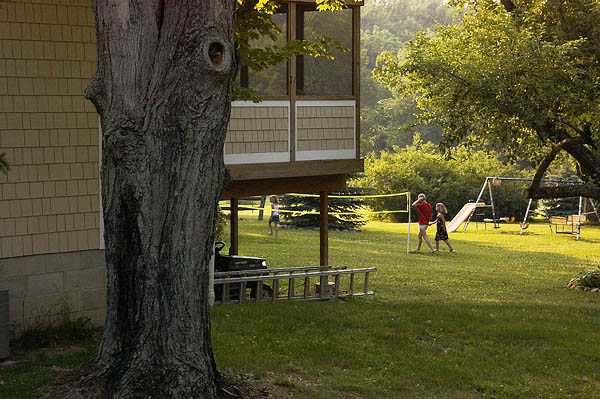
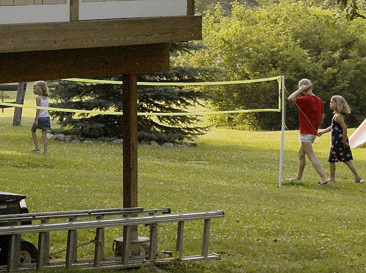
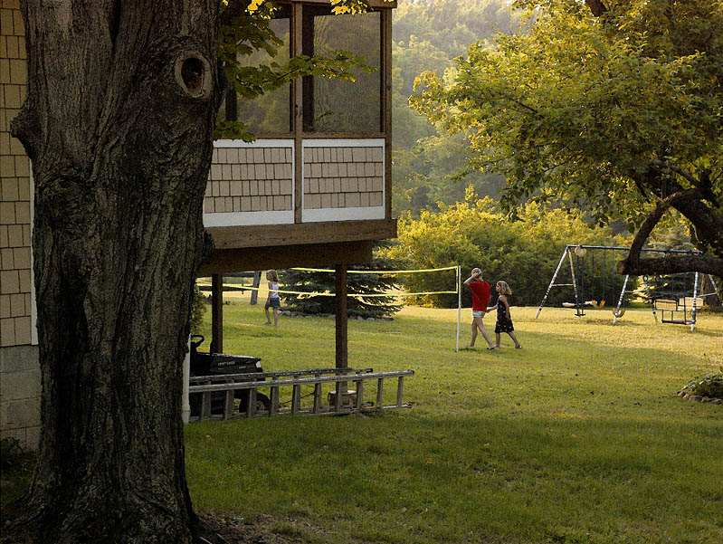
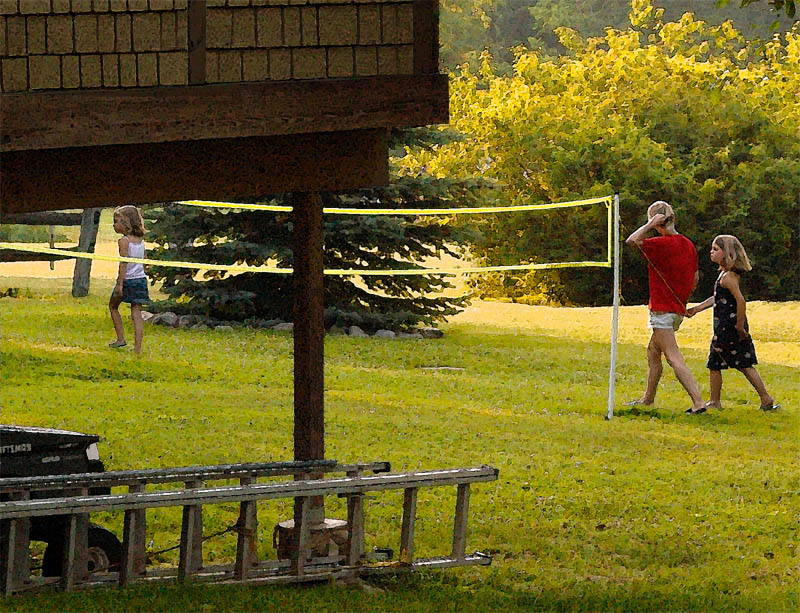

Into the Cathedral of Yellow Summer,
An adventure in post processing
Version 1.1, © 2005 by Dale Cotton, all rights reserved
Winter is white; spring, green; fall, orange and red. Do I get a vote? If so, I vote that summer be yellow.
The majority of photographers seem to perennially be wrestling with the question of whether it is ethical to retouch a photograph in any way. Photography is a technology that is employed for two very different purposes: documentation - as in photojournalism or forensic evidence in which retouching is correctly verbotten - and art. Of course, these two purposes are not always separate. Portrait artists for several thousand years (sometimes at the risk of their necks) have juggled the conflicting needs of verisimilitude and flattery, of truth and beauty; spotting out a pimple is nothing new to the bloke down the street running a portraits and wedding studio.
But the whole idea of art seems - to me at least - to be to drop the literalist ball of external accuracy and concentrate one's efforts on the creation or revelation of beauty and internal truth. We don't assume that Boticelli actually witnessed the Birth of Venus when we look at his painting of the same title; we know it was cut from whole cloth. In this wise in this little essay I am going to systematically push the limits of what the majority of photographers seem willing to accept (Uelsmann did you labour in vain?) - not just retouching, not just a jolt of saturation here or a squeeze of contrast there, but literally changing the content of a scene.

Fig. 1: IMGP0462.PEF as captured by camera and adjusted in RSE
Fig. 1 shows a RAW conversion of a frame I took on the fourth of July in Ohio at 7:10 PM. Just returning from a photo shoot, I saw the children playing and hurriedly extracted my trusty Pentax DS from its shoulder bag. No time to adjust settings - and even so the children were gone before I could get a second frame. As dark as Fig. 1 is it's already opened up 3 stops from the capture; if this had been a slide taken before the advent of digital editing it would undoubtedly have been tossed in the trash with perhaps a sigh for a missed opportunity.

Fig. 2: Preliminary edit of colour and contrast
Fig. 2 shows Fig. 1 opened in Photoshop then a bit of Levels and Curves used to open up the mid-tones and to warm the colour temperature a bit further. This is much closer to my memory of what I saw when I took the frame - our first hint that there may be something to salvage here in spite of those truly putrid shades of pea soup green. Just to make sure, let's look a little more closely:

Fig. 3: Crop from Fig. 2
Fig. 3 zooms in on the three young ladies. I like the way they have been captured in mid stride. I also really like those ladders! But, returning to Fig. 2, the composition leaves much to be desired. The huge tree trunk on the left may or may not be useful, but certainly all the dead space to the left of it has to go. Next, I create a duplicate layer; then clone out the slide; then ponder whether to keep it or leave it. Most importantly, the colours - while reasonably accurate according to the truth of the eye - are insufficient to convey the truth of the heart. The warmth of the day needs to be reflected in a corresponding warmth of pallette. Also, a deepening of shadows serves to enrich the scene. Finally, where others apply sharpening, I apply what I call my patented painterly meta-texture. The result of these corrections is this:

Fig. 4: Version A
I'm initially happy enough with this edit to print it. But living with the print for a few days makes me increasingly unhappy with the big box of screened patio in upper left centre. It dominates the entire composition but offers no energy or intrigue in return; it is too centrally located to crop out, so back to the drawing board. First, remove the off-white framing on the patio side wall, replacing it with shingles; then darken them to blend in more with their surrounds. This helps ... but not enough: time for radical surgery. Add a new major limb to the left tree to hide most of the patio; but that in turn seems to call attention to the tree on the right. Symmetry seems to demand the inclusion of at least some of its trunk, so create that from a copy of a section of the trunk on the left. The result of all this frantic activity is -

Fig. 5: Version B
Fig. 5 is the current and perhaps final edit. To me the two trees form a vaguely minaret-like arch over the entire frame, hence the title of this little junket beyond the pale.

Fig. 6: Crop from Version B
Will the young blond caucasian females exit stage left to leave the scene forever? Will they remorselessly seek retribution for the loss of their beloved slide? Will they grow up to become vestal virgins of the God of Balmy Days? The truth is in there, just through the arch... ;)
|